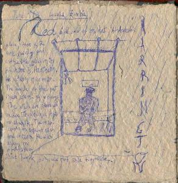
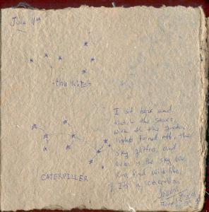

|
|
|
|
|  |
Something but not much happened in the past days. I have not written any entries, simply because life was pretty much normal. I was staying at this house, the Mathur's mansion, and all went well. Not too often did we leave the "royal" walls.
What I did do of interest was get to know Harrington, the night time security guard of the house. And in doing so, I also drew him.
|  |
Another activity of these days was an attempt to sketch some constellations in the sky. I had this goal of giving names to all the constellations, since I couldn't find anyone who knew them already, or who could tell me how this southern sky was. So i came up with one that I had been looking at for the past couple of days already, and Aneesh came up with an even more complex one. He is good. I would have never seen that one.
Aneesh and Mani decided to give me a ride to New Kapiri-Mposhi, which is where the Tanzania-Zambia Railway station is. This railway was built buy the Chinese in 1977, and they still use the same trains. His mother came along too. Before leaving Lusaka, I had to purchase the train ticket, since, the day before, when I got to the office, at about 15:45, they were already closed. When I got there, at abut 9:15, the man said pointing at the watch: "Didn't we agree that you would come at 8:30? You are not going to make to Kapiri! The train leaves at 12.30!" "I'm driving" I replied firmly. "How much for a first class ticket?" "That's not what we agreed on!". He was referring to the conversation we had the previous day, where I was merely asking questions. Eventually he stuck his hand out from under the window and waited. "What?" I asked. "Student ID" he said. I gave him that. He looked at it, put it back on the counter where he found it, then stuck his hand out again. "What?" I asked. "Money" he said. "How much?" "Oh, right, K85,000", which is about $25 for a 1800km stretch. I was realizing that I was not responding well to his arrogant behavior. I was trying to be arrogant back, but then in this case it was pretty pointless, because it would mean loosing. If I wouldn't have bought the ticket there, I would have just made my life harder.
I took the ticket and jumped in the car. Then a boy called me, so I rolled down the window and he gave me 3 envelopes he said I should deliver to the TAZARA train statin master, as a favor. I was puzzled and wondered how they could trust a random dude, but then I realized that failing to deliver the letters would have been silly. I had no intention not to deliver them. Actually, I kinda got a kick out of having a mission. But I was wondering "what if somebody just says yeah, yeah, and then tosses them out the window?" In such a case I guess the TAZARA dude would not trust tourists anymore. But maybe such thing never happened, which would explain why he would trust me. Maybe all the tourists are behaving relatively well, and that is why I am having a relatively easy time getting around....
It's a 2 hour drive from Lusaka to Kapiri, and it went pretty smooth. Once we got there, we checked the train station out. It was pretty shady, but not the station itself as much as the people in it. Eventually I said bye to Aneesh, his mum and Mani, and proceeded toward the train which was already 1 hour late at this point. A somebody waved at me, indicating to go to a box office titled "immigration". Now, what the hell is immigration doing here, that we are about 800km away from the border? Well, I haven't figured out the answer to that one yet. At any rate, he told me to show him my passport, so I did. And he soon found out that I was illegal.
That is right. Illegal I was. The dude at the Zimbabwe-Zambian border stamped me with a "VID" which apparently standed for "V1D", which ment "Visa one day", and this was on the 10th of June. Now, today was the 15th, so I was obviously illegal. Of course they knew what had happened and took advantage of the situation. I had to bribe them. I knew exactly what to do, I just didn't know how flexible they would have been. And as it turns out I could have bargained with them just the same way one bargains at the market. They asked for 400,000. I should have said I only had 50,000. They would have said it was no good, then I would have said, OK, I can give you my emergency money too, but then I am only left with $50, so here is 100,000. But it didn't go that way.
The main problem was that I had 200,000 in my innerjacket pocket and 50,000 in the front pocket of my trousers. So had I said I only have 100,000, and then stick the hand in my pocket and start counting only 50,000 would have been tricky, and I didn't feel confident enough to do this. At any rate, 250,000 later, they stamped me again, backdated to the 11th of June, with a "V7D". And, since it is always the last stamp that counts, I was now legal again.
It is funny how thin the line between being legal and being illegal is. I often think about it.
But at the end I, now legal, walked towards the main hall of the station, where the mass of people was standing and waiting. Then the gates opened and the crowd started to push forward. I was watching all from a little area, which was kind of like a porch, a few steps elevated from the main hall. I later found out that this was the 1st class waiting area. From there I assisted some cop guy severely beat another guy for what I dont know, because I missed. But this violent action caused the crowd to rush even faster thgrough the now free gates.
A guy standing next to me, Clement, told me that those were the 3rd class peple and reassured me that there would be no violence in the train (I asked him, as a matter of fact).
Once boarded I found my seat to be in the second couch and I was sitting with two businessmen from Congo, and a TAZARA dude, who was not on duty. He was very very nice and friendly and smart. He knew a lot, while the Congonians, they were more on the silent side, but very nice and respectful. I slept in the upstairs bed.
| Previous | Home | Next |
{kind=link}
{kind=link}